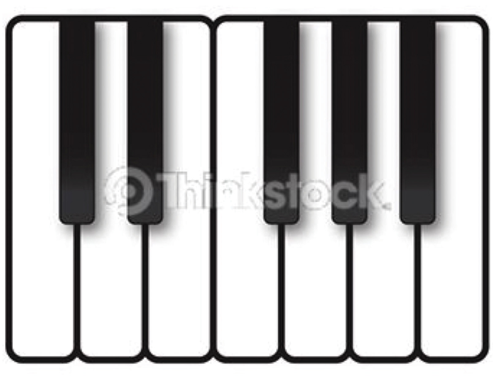

The keyboard serves as a visual reference for locating and identifying pitches. Observe Figure 2.12 "Small Keyboard Diagram" below. Notice the layout of the keyboard: there are two black keys grouped together, then three black keys grouped together. These visual reference points will help the familiarization process. Also observe the labels for the keys on the keyboard.
All musicians, regardless of discipline or instrument, should familiarize themselves with the keyboard. We are all visual learners to a greater or lesser extent. The visual layout of the keyboard will foster an understanding of pitch placement, register designation, scale construction, interval distance, chord construction-virtually every acquired skill in the study of music. The keyboard is a powerful and valuable tool.
In Figure 2.12 "Small Keyboard Diagram" observe that some white note pairs have an intervening black note and two pairs do not. Let us focus upon those two. Adjacent pitches are called semi-tones (or ”half steps”). The pitches E-F and B-C (the two white key pairs) are called diatonic half steps. Half steps that are measured from a white key to a black, or vice-versa, are called chromatic half steps.
The distance of a semi-tone or half step is the same for any two adjacent pitches across the keyboard. Figure 2.13 "Keyboard and Half Steps" shows this relationship in pitches.
Notes that are separated by an intervening note are called tones, or whole steps. Whole steps are formed by spanning the distance of two half steps. Figure 2.14 "Keyboard and Whole Steps" shows representative whole steps.
Figure 2.15 "Piano Keyboard" shows the entire piano keyboard. Each occurrence of the pitch-class “C” is labeled, as is the span from one C to the next. This visual reference will be helpful in understanding the following section.
On the keyboard diagram provided, label all pitches. Give enharmonic spellings for all black keys.
Figure 2.16 Keyboard
As an Aural Skills drill, perform the following: